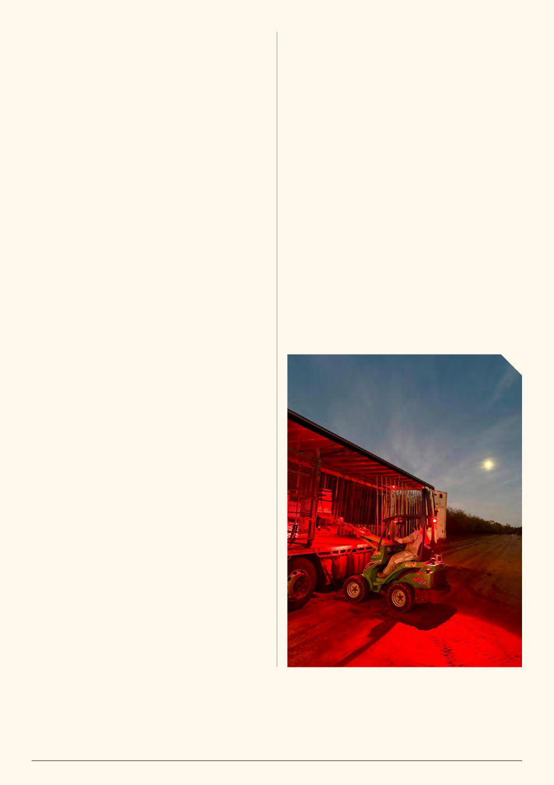

VAA AUSTRALIAN BEE JOURNAL | VOL. 109 No. 09 September 2026 | 17
maintaining those colonies, or is some of that value being lost
through the supply chain?
I can only speak from my own experience, but I remain a strong
believer in the direct relationship between beekeeper and grower.
When the two people carrying the risk can sit down together
and talk honestly about hive quality, price, timing, chemicals,
weather and expectations, there is less room for misunderstanding.
That doesn’t mean there isn’t a place for brokers. There clearly
is. But transparency will become increasingly important as the
economics of pollination change.
Chemical applications during flowering remains a concern
for beekeepers. I also think communication between growers,
agronomists and beekeepers is improving. That’s important and
should be recognised. But as the value and importance of managed
pollination increases, our understanding of the relationship needs
to mature with it. Simply putting bees in boxes in an orchard and
assuming everything else is somebody else’s problem no longer
passes the pub test.
A strong pollination colony is a significant investment. It has
taken months of nutrition, labour, queen management, varroa
monitoring and treatment to get that colony into the orchard.
And when it leaves almonds, that same colony may already
be committed to another pollination crop or be central to the
beekeeper’s spring production. That’s why the term “bee friendly”
should never become shorthand for “no risk.”
The conversation cannot simply be whether an agricultural
chemical kills adult bees outright.
We also need to think about exposure, brood and colony
development, interactions between products, and the potential
consequences after the hive leaves the orchard. Damage to a
colony can represent a significantly greater financial cost to the
beekeeper than the income received for providing the pollination
service in the first place.
That doesn’t mean crops should never be sprayed. Growers
have crops to protect and commercial realities of their own. It
means communication matters.
Talk to the beekeeper. Talk to the agronomist. Understand
what is being applied, why it is required, and when it can be
applied with the lowest reasonable risk. Growers and beekeepers
increasingly depend on one another.
Grower-owned bees — temporary fix or new normal?
Another fascinating development is the increasing discussion
around grower-owned bees.
Are grower-owned colonies becoming part of a new pollination
model, or are they a temporary response to uncertainty around
future supply? I don’t pretend to know the answer.
There are considerable differences between owning bees and
operating a sustainable commercial beekeeping business year-
round. But growers investing directly in bees tells us something
important about how seriously pollination security is now being
taken.
The almond industry itself is also adapting. Recent Almond
Board mapping shows that more than 25 percent of new almond
trees planted over the past three years are self-fertile varieties,
reducing some future pressure on managed pollination demand.3
That’s smart adaptation.
How far can our bees stretch?
Almonds are only the beginning of spring. As bees begin
leaving the orchards, many are already committed elsewhere.
Canola seed, cherries and other seed and horticultural crops all
compete for healthy colonies — and for the beekeeper’s time.
Historically there has also been an enormous invisible buffer:
unmanaged honey bees providing incidental pollination for free.
Varroa is changing that. The Australian Government reports that
overseas feral European honey bee populations declined by more
than 90 percent following the establishment of varroa.4
So the question isn’t simply whether Australia can supply
enough bees for almonds. It is how far can Australia’s managed
hive population stretch across all the crops that increasingly
need it?
Pollination security is now national news and is increasingly
finding its way into government, agricultural boardrooms and the
wider community.5 The bees are coming out of the back paddock.
That’s a good thing.
But recognition needs to translate into sustainable relationships
between growers and beekeepers. Because ultimately, we need
each other.
And despite all the economics, audits, varroa treatments,
contracts and politics, sometimes it takes somebody seeing almond
pollination for the first time to remind us what an extraordinary
thing it actually is.
So I’ll hand over to Jana Hamilton, a commercial beekeeper
from Far North Queensland who travelled almost 3,000 kilometres
south and finally ticked almond pollination off her bucket list.
References
1. Agriculture Victoria. “Varroa mite – current situation.” Agriculture Victoria (Dept. of Energy, Environment and Climate Action).
2. Agriculture Victoria. “Miticide resistance in varroa mites: What Victorian beekeepers need to know.” Agriculture Victoria (Dept. of Energy, Environment and Climate Action).
3. Hollingworth, Kellie. “Almond industry plants to protect pollinators.” Australian Almonds (Almond Board of Australia), 2026 July 7th.
4. Australian Government Department of Agriculture, Fisheries and Forestry. “Honey bees, crop pollination and varroa mite — frequently asked questions.” DAFF.
5. Victorian Apiarists’ Association. “The State of Beekeeping and Pollination Security in Victoria and Australia.” 2026 July
Unloading at the Almonds, by Jana Hamilton
Bee friendly doesn’t mean no risk
Protecting the crop and protecting the pollinator
should not be competing objectives.